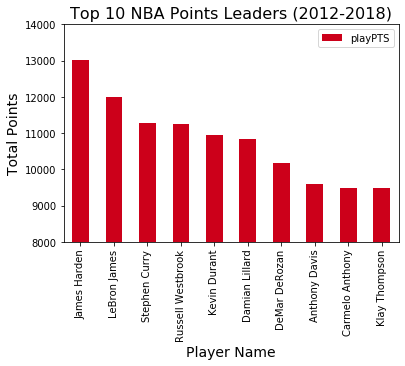
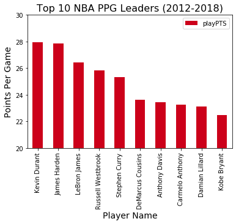

<div class="background">
  <div class="page">
    <div class="points">
      <h2 class="page-title"><u>POINT LEADERS</u></h2>
      <p>
        Let's again look at our chart of total points scored from 2012-18 and compare that against the 
        points per game average, or PPG, and see how those charts compare to one another.  We would obviosuly 
        expect a direct relationship between the total number of points, and the average number of points 
        scored in each indivudual game.
      </p>
      <div class="point-charts">
        
        
      </div>
      <p>
        If you review the two charts above, you will quickyl recognize some 
        similarities bewteen the two.  For example,  The top five total point 
        scorers are the exact same top five as the PPG leaders.  With only ten 
        spots on each list, there are eight players that appear on both lists.  
        None of that should be particularly surprising because every team plays 
        the same number of games so the highest per game averages should also be 
        the overall point leaders.
      </p>
      <p>
        let's then take a look at the the outlyers, or the two players on each list 
        that do not appear on the other...  The two players were made the PPG list but 
        not the total points list were DeMarcus Cousins and Kobe Bryant, and with basic 
        knowledge of the NBA it is rather  easy to figure out why despite having high 
        PPG numbers but not total points.  DeMarcus Cousins has suffered multiple serious 
        injurys over the last few years meaning he didn't play in a large number of games 
        despite his strong performce when he does play.  Kobe Bryant also missed time due
        to injury, but the real reason he hasn't played nearly as many games as the players 
        on the Point Leaders chart because he retired following the 2015/16 NBA season which 
        means that there were two full years, or 164 games that he missed at the end of our 
        range from 2012-2018.
      </p>
      <p>
        Not always, but frequently you will need to have some understanding of the data you're 
        working with so you can make accurate inferences regarding the outcome of you're data analysis.
        Now review the the graphs below and see if you can find any relationships between the various 
        statistics.
      </p>
      <hr>
    </div>

    <div class="graphs">
      <h2><u>OTHER STAT LEADERS</u></h2>
      <div class="section">
        
        
      </div>
      <hr>
      <div class="section">
        
        
      </div>
      <hr>
      <div class="section">
        
        
      </div>
      <hr>
    </div>

    <p>
      With zero knowledge regarding the NBA, the eight graphs on this page can still 
      provide some valuable information.  However for those who do know the NBA in 
      some detail can take away much more and will truely understand why certain 
      players are or are not on these top ten lists.  Knowing each players team is 
      also an important factor that these graphs don't display but would be consdiered 
      "common knowledge" to millions of people. <span>Especially when cosnidering the 
      bottom two that compare team wins and MPG of each individual player.</span>
    </p>

    <!-- <div class="form">
      <h3>Using your own NBA knowledge in conjunction with the charts above, what inferences can you make?</h3>
      <form class="inferences">
        <input name="name" type="text" placeholder="ENTER YOUR NAME" class="input"><br>
        <textarea name="analysis" rows="10" cols="30" placeholder="WRITE OUT YOUR ANALYSIS HERE..." class="input"></textarea><br>
        <button onclick="submitAnalysis()" class="submit-btn" type="button">SUBMIT ANALYSIS</button>
      </form>
    </div> -->

    <div class="navigate">
        <a [routerLink]="['/basics']">PREVIOUS PAGE</a>
        <a [routerLink]="['/foster']">NEXT PAGE</a>
    </div>
  </div>
</div>
